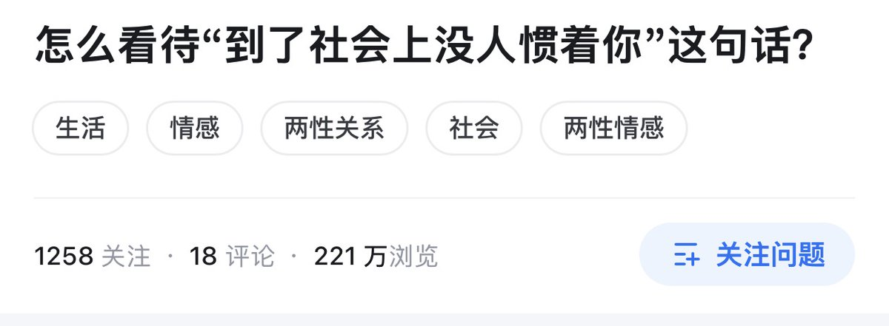

凌嘉欣
@LingJiaXin233
让我想起了那个段子。
小朋友从小不吃香菜。但是他妈妈认为他挑食，于是经常逼着他吃香菜。
他妈妈的口头禅就是到了社会上没人会惯看你。
后来小朋友长大了，步入了社会。他发现社会上真的没有人逼着你吃香菜。
无论去什么地方吃饭，只要是付钱。说一声，不加香菜，别人是不会给他加的。
他还不吃辣。有一次去吃面，说了不要了，结果老板硬是给他加了，还说加了好吃。
他站起身转身就走。老板立马认怂，说给他重做一碗。
到了社会上的确会没人惯看你。但是你们这么做并不是惯看，而是欺负。成年人在家里欺负自己的小孩，真的很丢脸。
